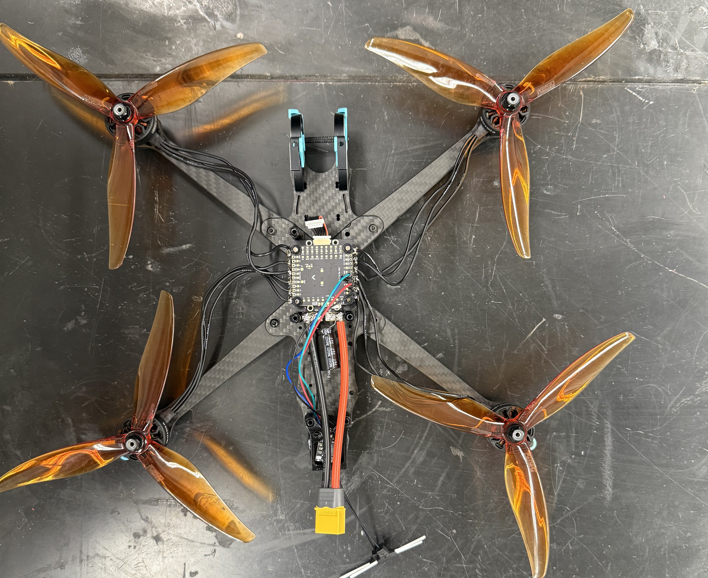
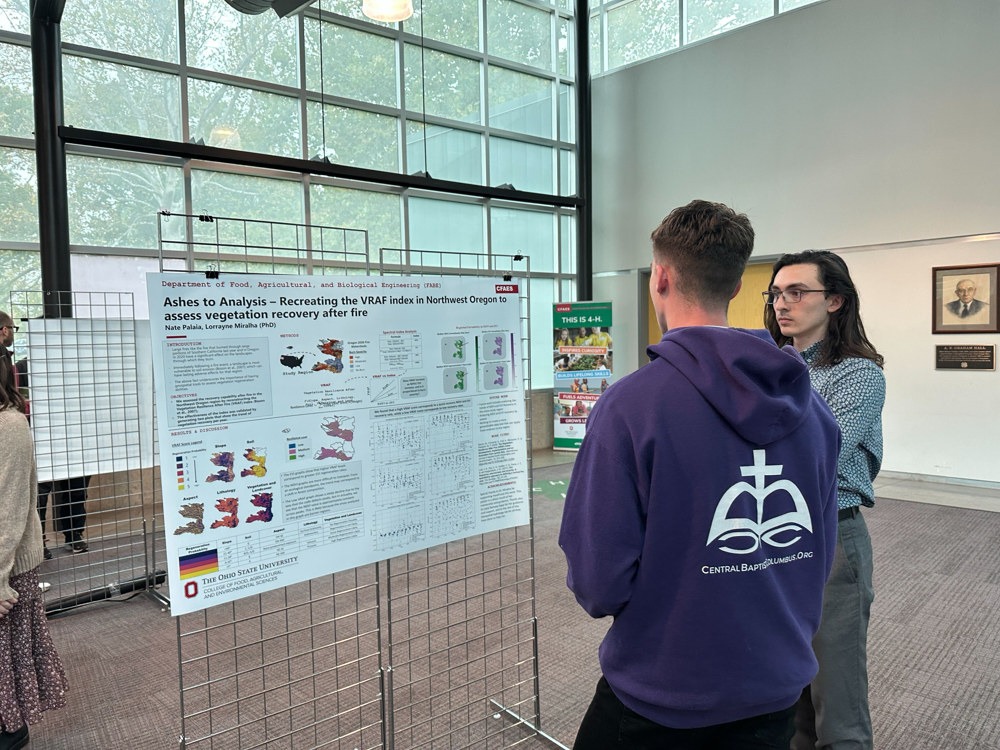
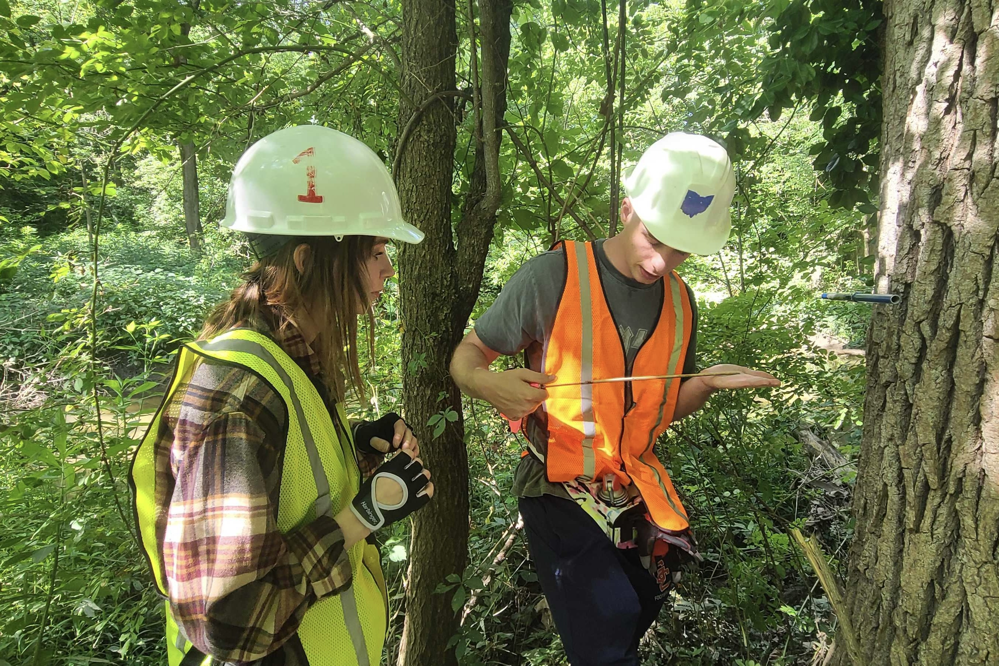

Selected Work
Projects


Autonomy / Robotics
Indoor GPS-Denied Autonomous UAS
Led a team of undergraduates in designing and constructing a drone capable of autonomous indoor flight without GPS — covering frame design, sensor integration, and navigation logic.
Technical Details
Autonomous Indoor UAV Platform
Objective
- Build an autonomous UAV capable of indoor navigation using MarvelMind positioning beacons and ArduPilot
My Contributions
- Led airframe redesign around Pixhawk 6C
- Integrated telemetry radios, optical flow sensor, companion computer, and propulsion system
- Configured ArduPilot, ExpressLRS, ESC firmware, and positioning sensors
- Debugged indoor GPS integration and EKF configuration and established stable GPS connection
- Diagnosed and resolved power distribution and motor bring-up issues
- Validated code using Ardupilot Software-in-the-Loop (SITL) program
- Obtained significant experience with microcontrollers, embedded systems, and serial communication
Key Challenges
- MarvelMind ↔ ArduPilot compatibility
- Serial communication and GPS configuration
- Power system troubleshooting during initial bring-up
Results
- Achieved stable indoor 3D position fix
- Validated propulsion and power systems
- Established hardware platform for future autonomous missions and computer vision integration
Skills Demonstrated
- Embedded systems
- UAV integration
- ArduPilot
- Electrical debugging
- RF communications
- Sensor integration
- Systems engineering
Future Work
- Leading a team of 7 undergraduates in developing a new UAS for outdoor sensing and data aquisition missions


Remote Sensing
Geospatial Hydrology Data Product
Developed and validated a novel data product for environmental management using remotely sensed satellite data as part of an ongoing research role.
Technical Details
Forest Recovery Geospatial Data Product (Geospatial Data Analytics)
Objective
- Develop a geospatial data product capable of assessing a burned forest's relatice recovery time
My Contributions
- Conducted literature review of similar geospatial data products
- Utilized ArcGIS to merge lithology, soil, slope, aspect, and vegetation layers into a weighted raster
- Assigned raster weights according to Bisson et al (2006)
- Validated the product through calculating remotely sensed spectral indices, Normalized Vegetation Index (NDVI) and Enhanced Vegetation Index (EVI)
- Presented findings at 3rd Annual Interdisplinary Water Research Syposium at Ohio State University
- Presented findings at the national level at the 2025 American Geophysical Union (AGU) annual meeting
Key Challenges
- Construction of a representative vegetation layer
- Development of Python codes for geospatial analyse
- Management, organization, and analyse of extremely large datasets
Results
- Developed data product to assess forest recovery time after moderate to severe wildfire events
- Validated data product through time series analysis of spectral index recovery and saw trends suggesting the validity of the product
- Established a methodology for recreating the product in other regions of the globe
- Presented work at the local and national level
Skills Demonstrated
- Geospatial data processing/analytics
- Geographic information systems (GIS)
- Remote Sensing
- Python for data analytics
- Pythin for remote sensing
- Satellite imagery
- Formal research and presentation skills